In 2019 I hit my head while playing sports, and gave myself a concussion. Occupational therapy helped my recovery, but keeping track of how I was doing (mood, headaches), and how I was spending my time (enough rest breaks?) was so boring and time-consuming that I didn’t do it consistently.
Of course necessity is the mother of invention, so I started dreaming up some recovery tech that I could make:
- Mood Tracker Smartwatch App
- Time tracking cube
Mood Tracker Smartwatch App
I figured my Samsung smart watch was an android device, so making an app for it would be pretty straight forward. Turns out that apps for this watch have to be developed using the Tizen Studio IDE instead of the more common Visual Studio IDE. But in the end I cobbled together a nifty app where I could click on how I was feeling (or if I had a headache), and later export this data into an excel graph.
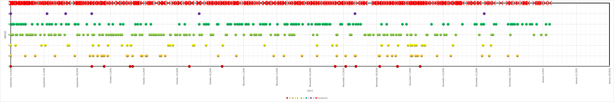
Time tracking cube
For me the biggest piece to occupational therapy was managing my time through the day so that I had a mix of easy, medium, and difficult tasks, interspersed with regular rest moments. My therapist had a model whereby each difficulty level is given a number of points, and each day ends up with an overall point score. I started with a low point budget for my days, which increased as I recovered more and more. To do away with pencil and paper time tracking, I decided to design a gadget that would track my time and task difficulty for me.
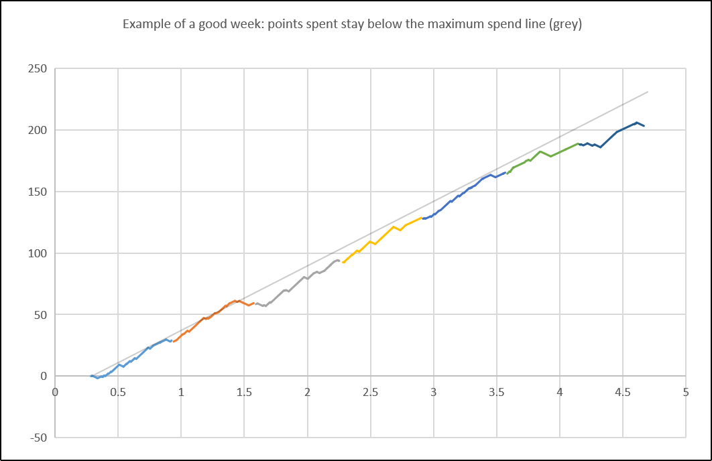
I came up with the idea of a gyroscope inside a cube, which would log which side is facing up, and for how long. I would send this data to my computer or phone via bluetooth, and automatically generate my weekly point expenditure graph.
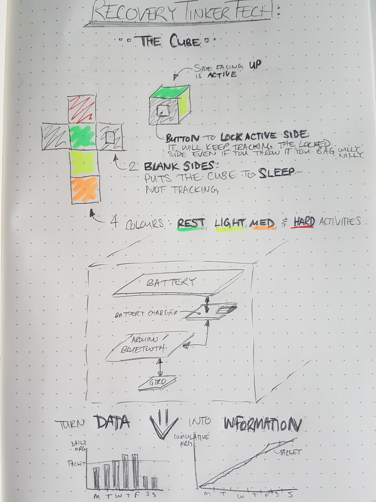
Next I fleshed out how exactly I could bring the concept to life, and started in on a functional prototype. I bought some parts (Beetle BLE Arduino, Grove 6-axis accelerometer & gyroscope, and LiPo battery), soldered them together, and decided that the accelerometer would track which side of the cube faced up just fine.
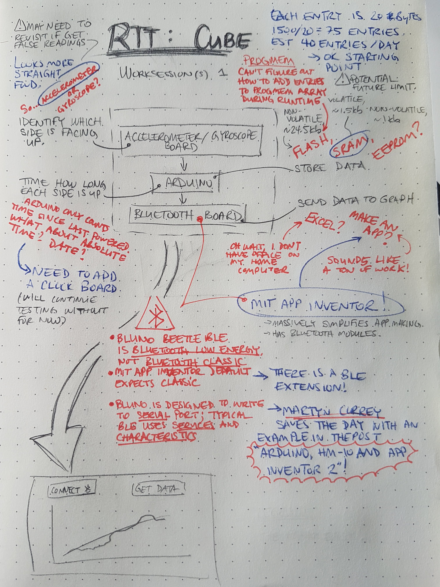
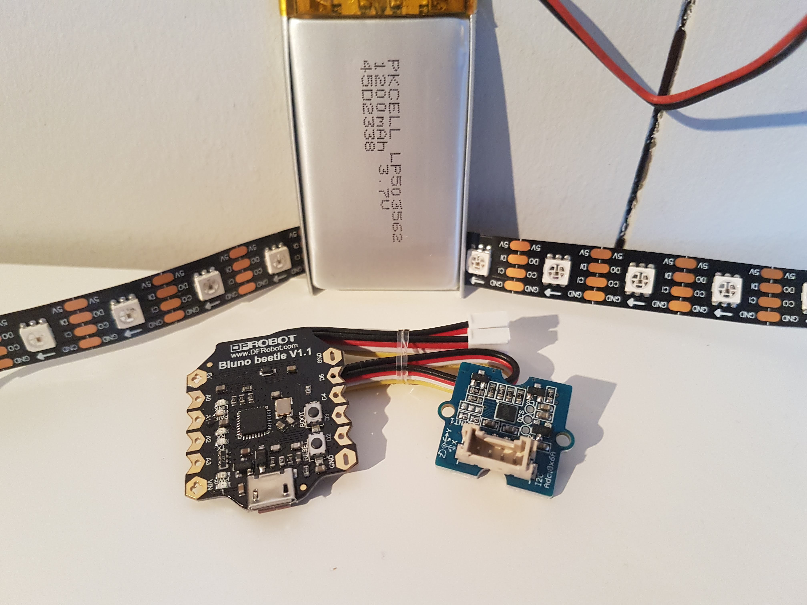
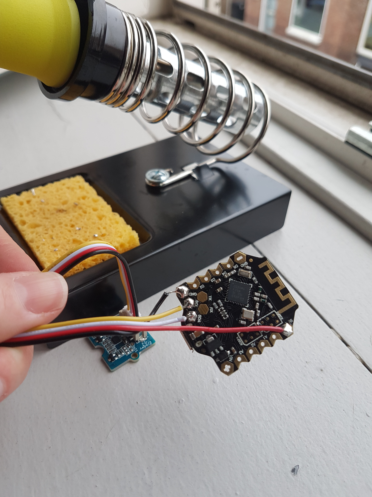
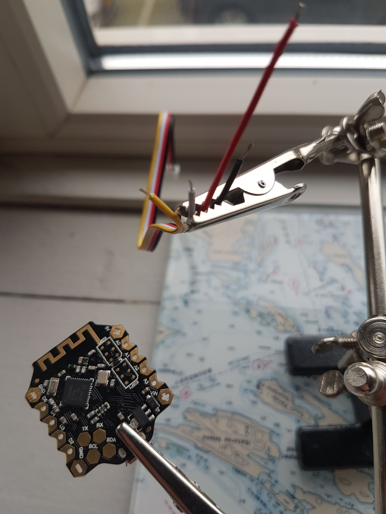
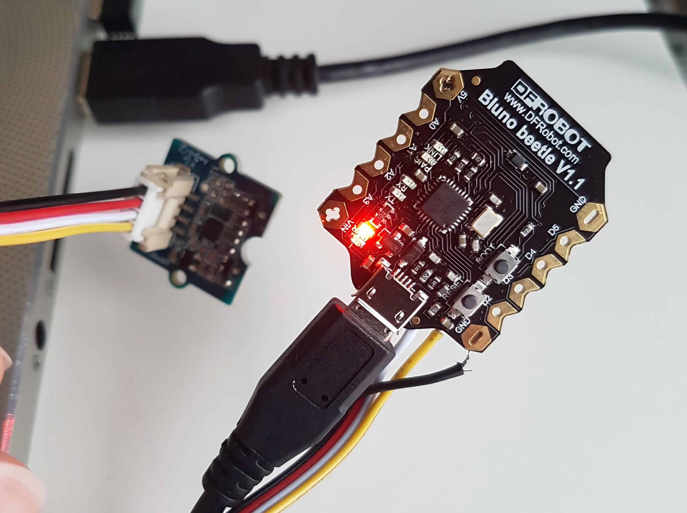
Next step was to get the bluetooth working, and send the collected data to a MIT App Inventor app on my phone. MIT App Inventor is a free web application for making custom low-code cell phone apps. It’s a fantastic initiative by Google and MIT, but I was struggling to get anywhere until I found a BLE program by a fellow named Martyn Currey, which solved most of my difficulties. Thanks Martyn!
At this point I remembered that arduinos aren’t great with time. My beetle could count elapsed time, but wouldn’t know one day from the next. So I found an Adafruit DS1307 Real Time Clock (RTC) to add to the mix.
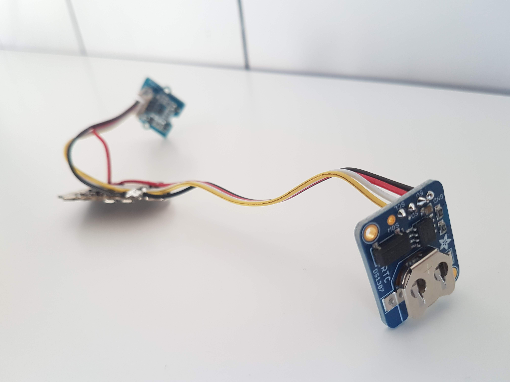
Now that I could collect info about the date, the time, and which side is facing up, and knew how to send data from the arduino to my phone in one long string of characters, it was time to figure out how to parse and format the bluetooth data and save it in the app’s database for future use.
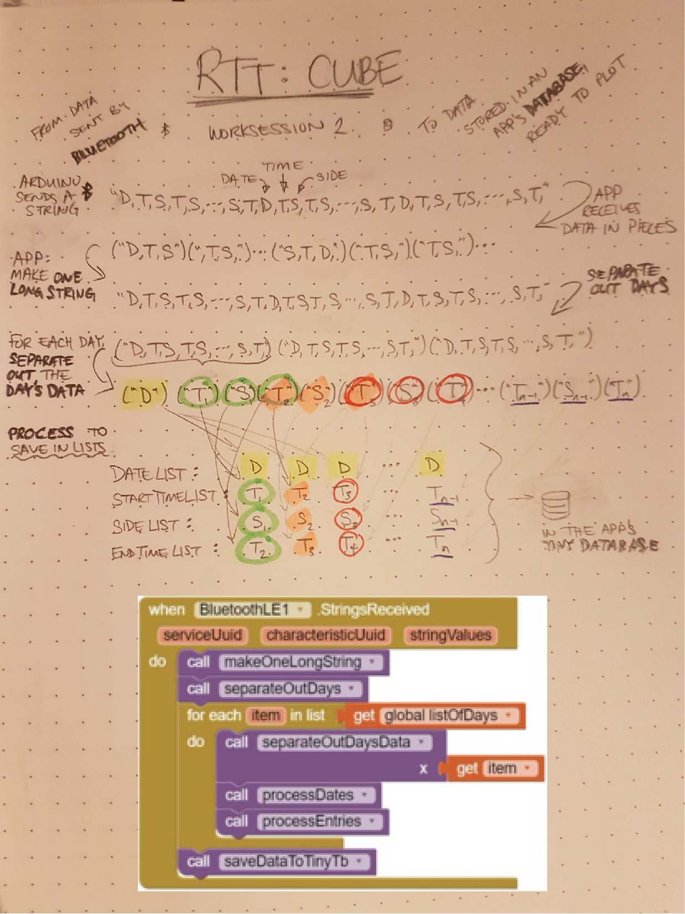
Electrical/ programming is looking good, but what about the physical part?
I adapted a really nice model of a companion cube by 0x7D (Kevin), to hold the battery and 2 PCBs that I would mount the arduino, accelerometer, RTC, and an additional battery board on, and friend printed some of the parts for me. The battery fits inside beautifully, I need to update the model to fit the prototype boards, button, and charge port a little better.
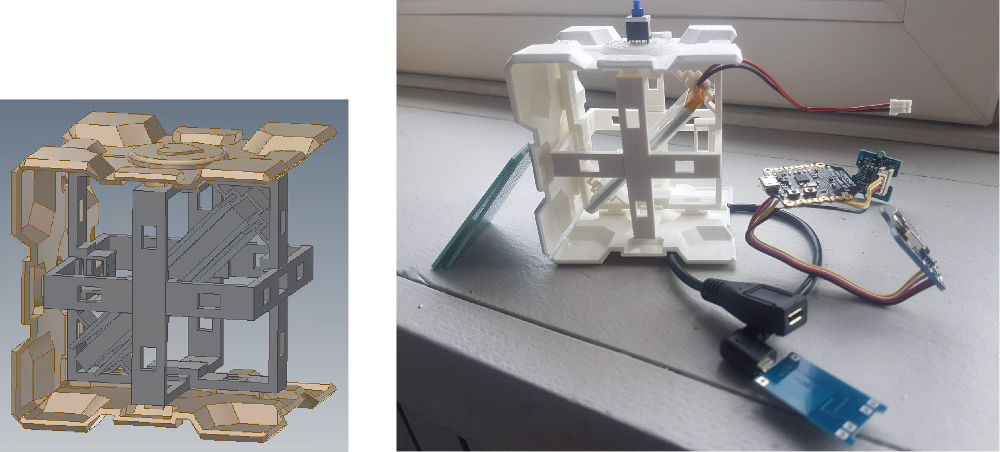
Note from 2023: I ended up starting a new job rife with mechatronics tinkering, and ended up putting this project down. Who knows, maybe it will regain new life again some day.